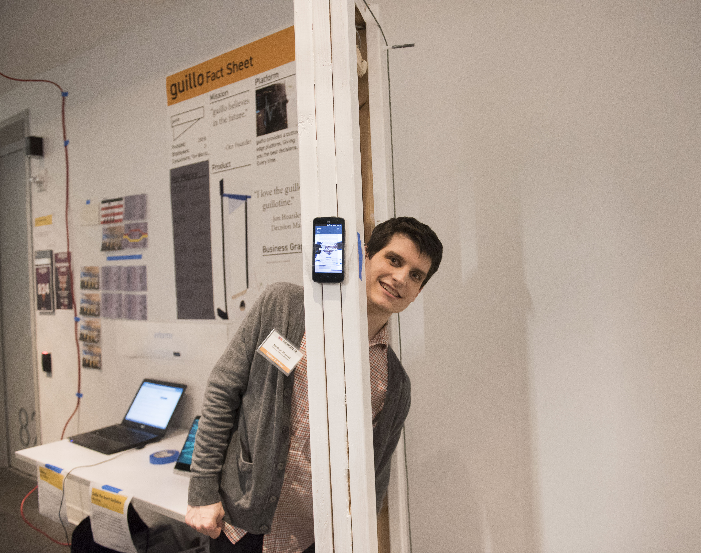

Guillo is a fantastic example of Nathan Mierski's hubris. The project is a company which creates technological solutions for real world problems. The solution is a guillotine and the problems are any ol' thing. This manifested in promotional material, a website, scripts for sales pitches, a video advertisement, and a 10 foot working replica of a guillotine. There's a picture of me with the dang thing up there.